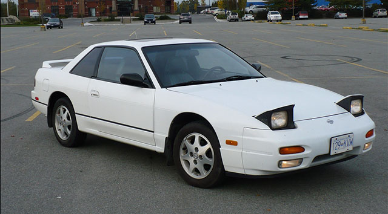
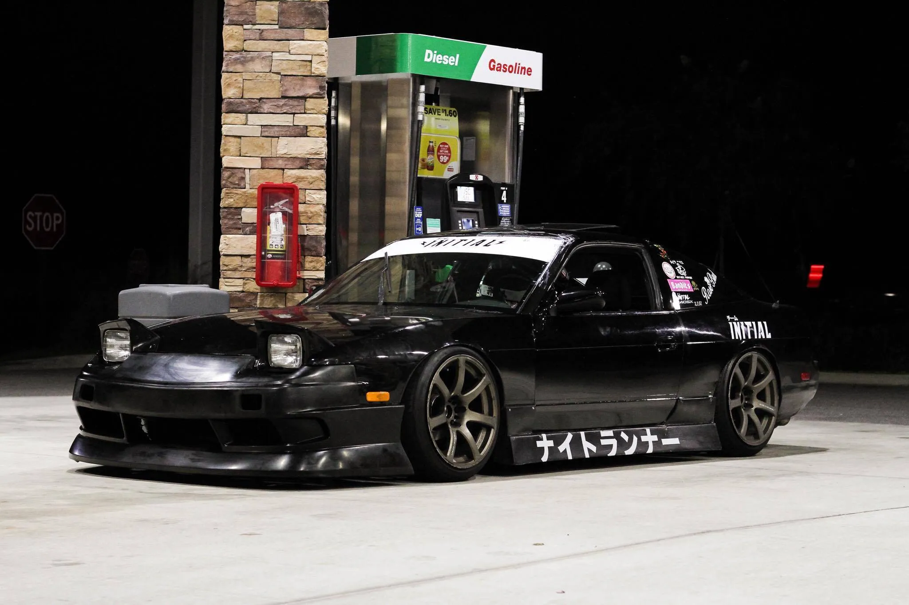

Nissan 240sx s13

- Gas
- 2.4L
- 155 Hp @ 5,600 rpm
There are a ton of modificantion you can make to this beauty of a car, such as adding JDM-Spec Rims or even adding new racing seats. This car can be modified in ways to make it a drift king on the track, by changing it's susspension and its tires. these cars aren't slow but they're a long way from being properly fast. Thankfully, the Nissan SR20DET engine in most 240SXs is robust enough for some significant power increases without needing to replace too many of the stock internals. i would reccomend that you change the wrap and customize the wing for the apperance, in my oppinion it looks way better. The pictures bellow are examples on how the 240sx can look like fully customized.
